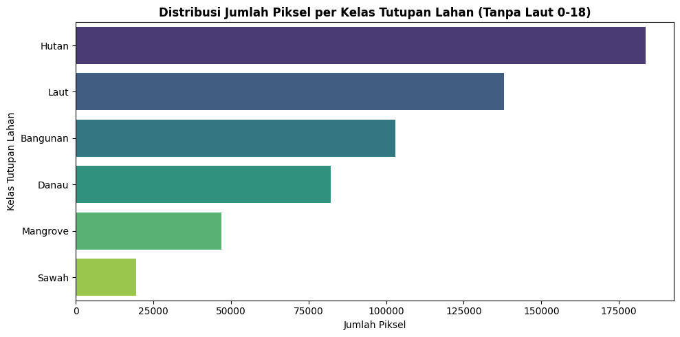
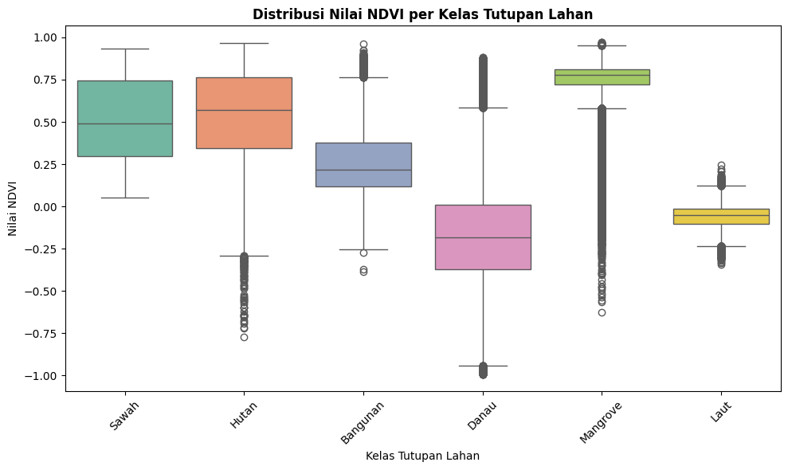

3. Exploratory Data Analysis (EDA)#
Exploratory Data Analysis (EDA) dilakukan untuk memahami struktur distribusi kelas tutupan lahan dan memverifikasi keterpisahan spektral (spectral separability) antar kelas sebelum tahap pemodelan klasifikasi. Sampel poligon Laut nomor 0 sampai 18 (Laut_0000 hingga Laut_0018) dikecualikan terlebih dahulu karena posisinya berada di luar batas wilayah Provinsi Jawa Timur.
1. Distribusi Jumlah Piksel per Kelas#
Diagram batang horizontal berikut menampilkan volume sampel piksel untuk setiap kategori tutupan lahan pada dataset valid.
from pathlib import Path
import matplotlib.pyplot as plt
import seaborn as sns
import pandas as pd
dataset_path = next(
(
candidate
for folder in (Path.cwd(), *Path.cwd().parents)
for candidate in (
folder / "piksel_s2_JTM.csv",
folder / "Tugas" / "UTS" / "piksel_s2_JTM.csv",
)
if candidate.is_file()
),
None,
)
if dataset_path is None:
raise FileNotFoundError("Dataset piksel_s2_JTM.csv tidak ditemukan.")
df = pd.read_csv(dataset_path)
# Hapus sampel poligon laut 0 sampai 18 karena melebihi batas Jawa Timur
excluded_laut = {f"Laut_{index:04d}" for index in range(19)}
df = df[~df["poligon_id"].isin(excluded_laut)].copy()
plt.figure(figsize=(10, 5))
sns.countplot(
y='label_teks',
data=df,
palette='viridis',
order=df['label_teks'].value_counts().index
)
plt.title('Distribusi Jumlah Piksel per Kelas Tutupan Lahan (Tanpa Laut 0-18)', fontsize=12, fontweight='bold')
plt.xlabel('Jumlah Piksel', fontsize=10)
plt.ylabel('Kelas Tutupan Lahan', fontsize=10)
plt.tight_layout()
plt.show()
C:\Users\hp\AppData\Local\Temp\ipykernel_924\1627578237.py:28: FutureWarning:
Passing `palette` without assigning `hue` is deprecated and will be removed in v0.14.0. Assign the `y` variable to `hue` and set `legend=False` for the same effect.
sns.countplot(

Interpretasi Distribusi:#
Hutan (183.509 piksel) dan Laut (138.000 piksel) memiliki volume sampel terbesar karena tutupan vegetasi hutan lindung/pegunungan dan perairan laut regional Jawa Timur.
Bangunan (103.017 piksel) dan Danau (82.245 piksel) memiliki representasi yang kuat di kawasan perkotaan dan perairan darat.
Mangrove (46.985 piksel) dan Sawah (19.512 piksel) memiliki volume yang lebih terkonsentrasi namun mencukupi untuk pelatihan model terstratifikasi.
2. Distribusi Nilai NDVI per Kelas Tutupan Lahan#
Indeks vegetasi Normalized Difference Vegetation Index (NDVI) dianalisis untuk melihat bagaimana pantulan inframerah dekat (NIR) dan serapan merah (Red) membedakan kelas vegetasi dari non-vegetasi.
plt.figure(figsize=(10, 6))
sns.boxplot(x='label_teks', y='NDVI', data=df, palette='Set2')
plt.title('Distribusi Nilai NDVI per Kelas Tutupan Lahan', fontsize=12, fontweight='bold')
plt.xlabel('Kelas Tutupan Lahan', fontsize=10)
plt.ylabel('Nilai NDVI', fontsize=10)
plt.xticks(rotation=45)
plt.tight_layout()
plt.show()
C:\Users\hp\AppData\Local\Temp\ipykernel_924\1096271146.py:2: FutureWarning:
Passing `palette` without assigning `hue` is deprecated and will be removed in v0.14.0. Assign the `x` variable to `hue` and set `legend=False` for the same effect.
sns.boxplot(x='label_teks', y='NDVI', data=df, palette='Set2')

Interpretasi Karakteristik Spektral NDVI:#
Vegetasi Rapat (Hutan & Mangrove): Memiliki nilai median NDVI tertinggi (\(> 0.65\)), mencerminkan kanopi hijau yang sangat aktif menyerap cahaya merah dan memantulkan inframerah dekat.
Pertanian (Sawah): Menunjukkan rentang variasi NDVI yang cukup lebar (\(0.25 - 0.75\)). Hal ini wajar dalam studi spasial pertanian karena sampel sawah mencakup fase bera (tanah basah/kering), genangan air tanam, hingga fase vegetatif hijau tua sebelum panen.
Badan Air (Danau & Laut): Memiliki nilai NDVI negatif atau mendekati 0, karena air menyerap hampir seluruh gelombang inframerah dekat (NIR).
Wilayah Terbangun (Bangunan): Memiliki nilai NDVI rendah (\(0.05 - 0.25\)), membedakannya secara jelas dari kelompok vegetasi hijau.